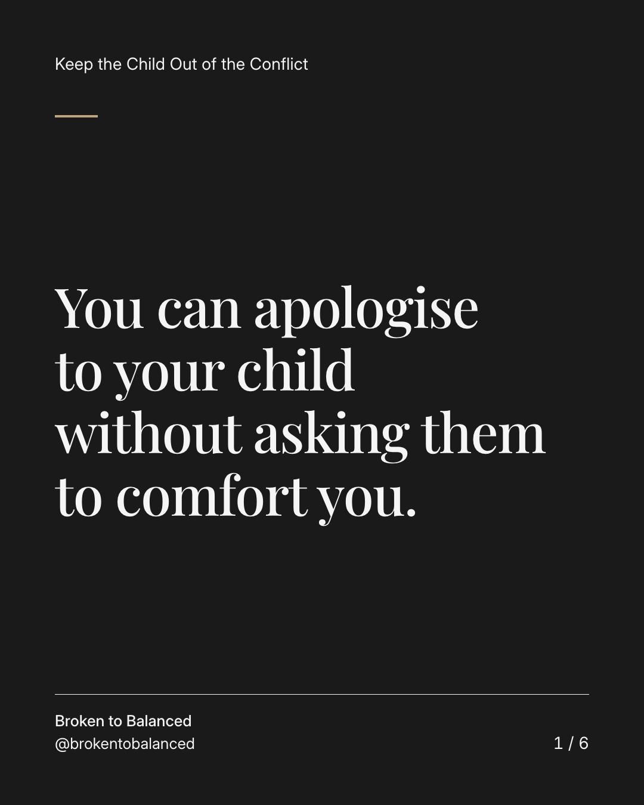
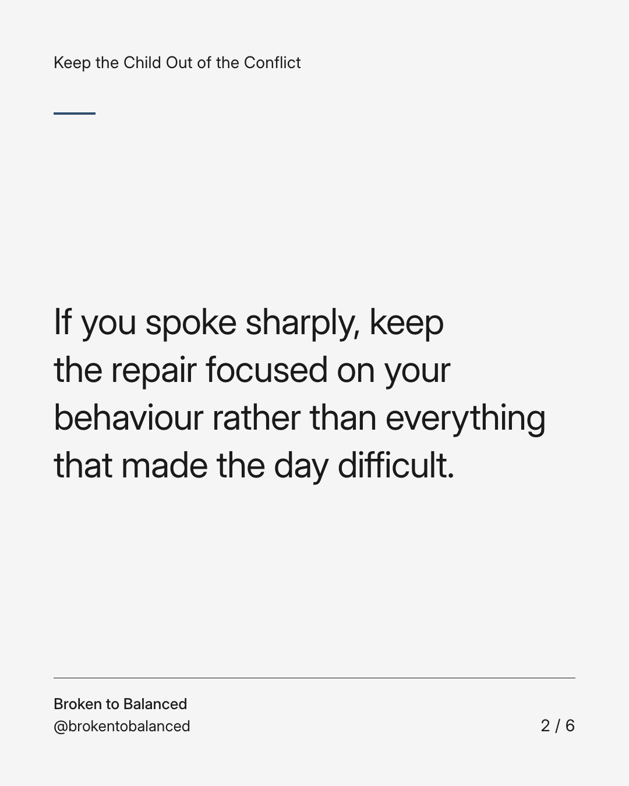
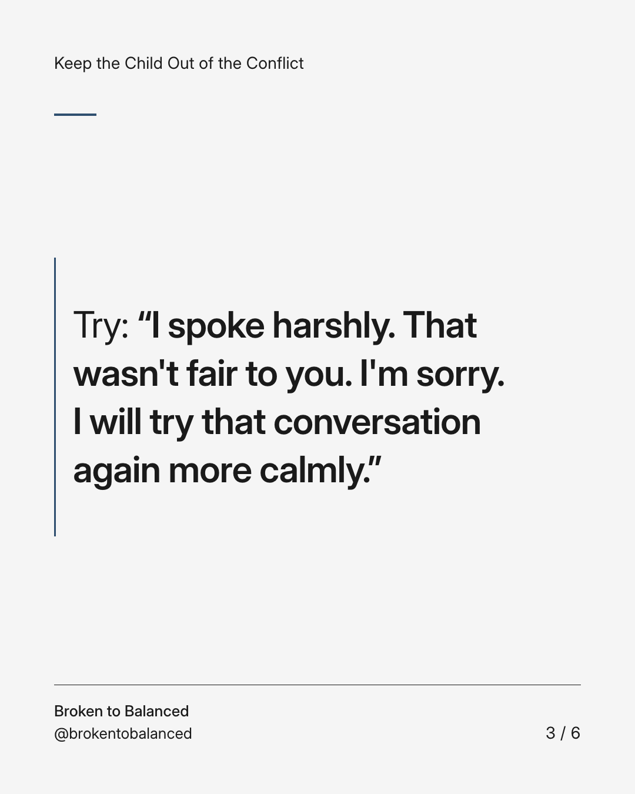
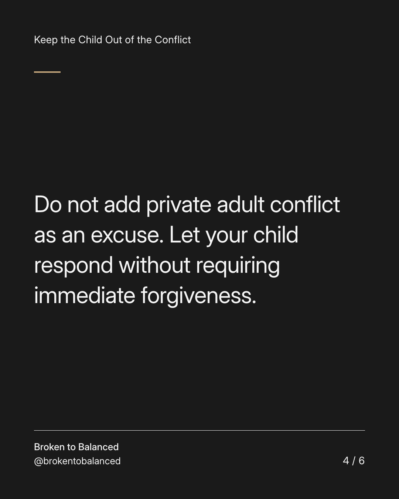
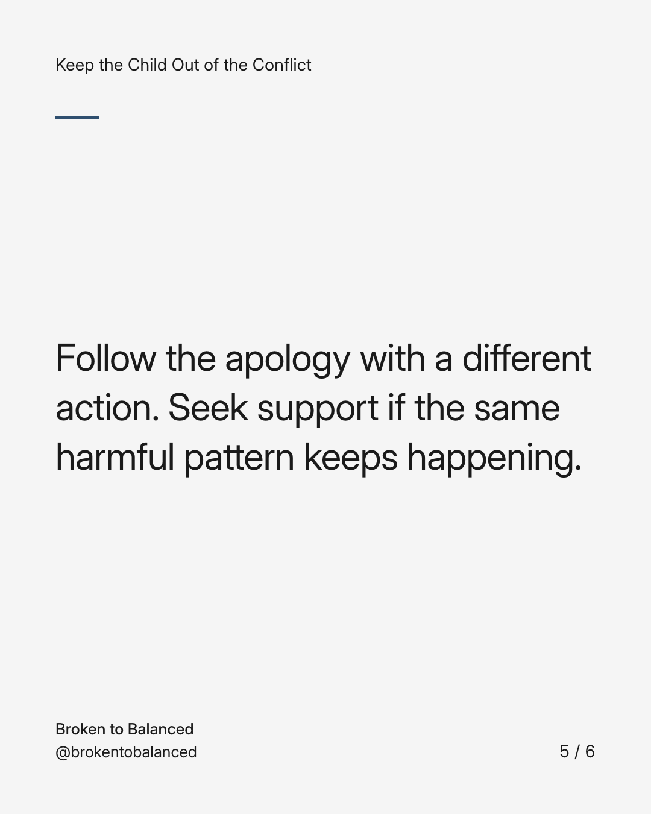
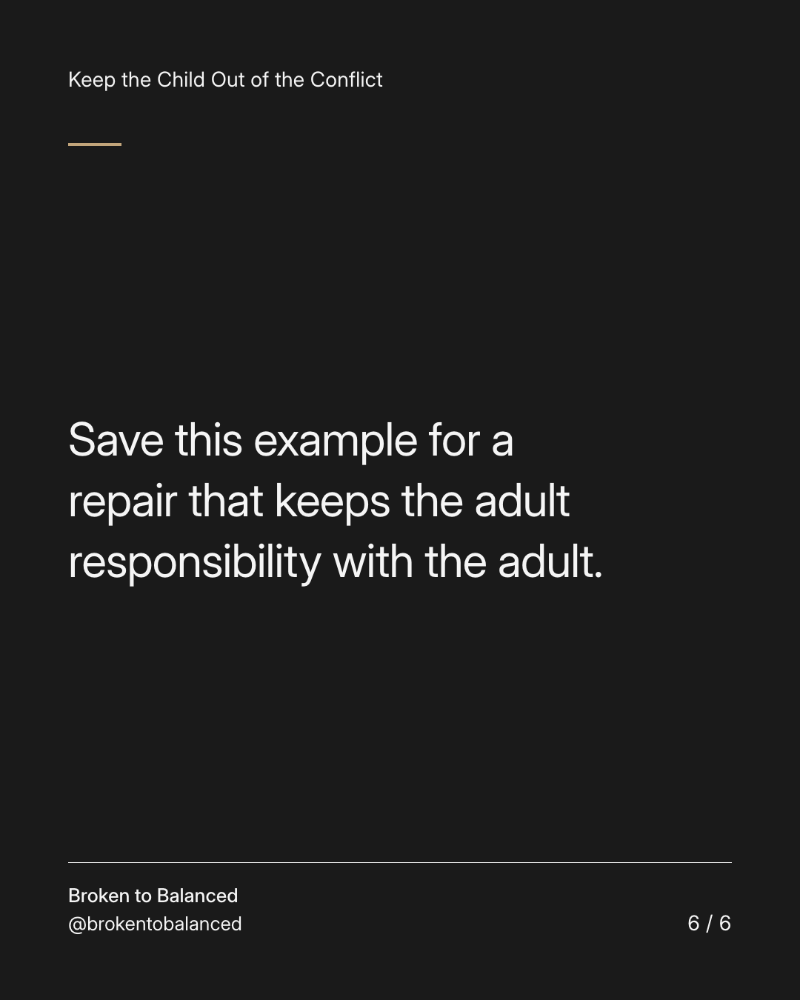

Exact text and accessibility text
You can apologise to your child without asking them to comfort you.
Slide 1 of 6. You can apologise to your child without asking them to comfort you.


Exact text and accessibility text
If you spoke sharply, keep the repair focused on your behaviour rather than everything that made the day difficult.
Slide 2 of 6. If you spoke sharply, keep the repair focused on your behaviour rather than everything that made the day difficult.


Exact text and accessibility text
Try: “I spoke harshly. That wasn't fair to you. I'm sorry. I will try that conversation again more calmly.”
Slide 3 of 6. Try: “I spoke harshly. That wasn't fair to you. I'm sorry. I will try that conversation again more calmly.”


Exact text and accessibility text
Do not add private adult conflict as an excuse. Let your child respond without requiring immediate forgiveness.
Slide 4 of 6. Do not add private adult conflict as an excuse. Let your child respond without requiring immediate forgiveness.


Exact text and accessibility text
Follow the apology with a different action. Seek support if the same harmful pattern keeps happening.
Slide 5 of 6. Follow the apology with a different action. Seek support if the same harmful pattern keeps happening.


Exact text and accessibility text
Save this example for a repair that keeps the adult responsibility with the adult.
Slide 6 of 6. Save this example for a repair that keeps the adult responsibility with the adult.
Exact caption
Plain-text fallback: select and copy the caption.